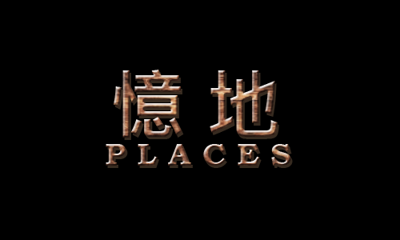
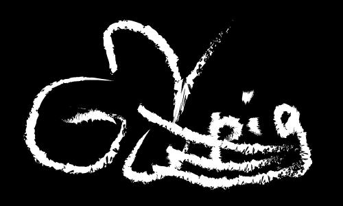
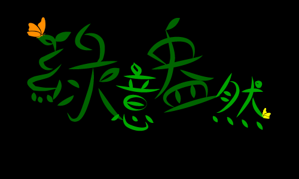
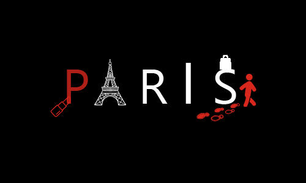

憶地
為我們組別這次專題的主題所設計，是一款懸疑文字遊戲，故事中主角從森林清醒發現既陌生卻又不知怎地有點熟悉，為了呼應最初場景-森林選擇使用木紋當字體的基底，並用斜角與浮雕凸顯木頭感。
GOGOPIG比賽
為"gogopig換衣服"比賽參賽作品字型設計，主辦單位為南投豬事園區。用潑墨字體表現出即使在養豬場也能體驗到自由感，右下加上三條線呈現出gogo的速度感。
綠意盎然
春天來了周圍的樹木從死氣沉沉變成生氣蓬勃，利用兩種不同深淺的綠色堆疊出樹木前後的層次感。小小的蝴蝶剪影帶出春天感，並藉由較鮮艷的顏色為文字點綴，帶出亮點。
Paris
巴黎被譽為時尚之都，遊客前往巴黎都會戴上自己最滿意的妝，故用口紅表達。他們也常藉由逛街，感受巴黎街頭時尚的氛圍，所以在s上面放了一個購物袋。大家也皆會前往艾菲爾鐵塔，所以以這項最具代表性的建築代替A。